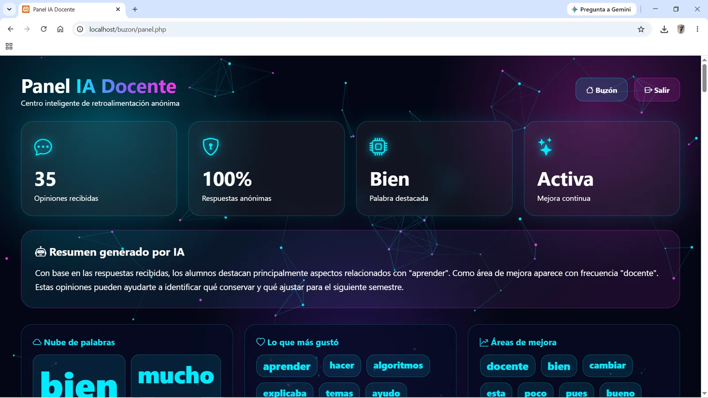
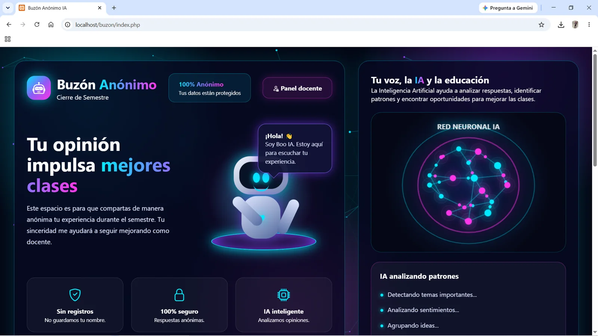
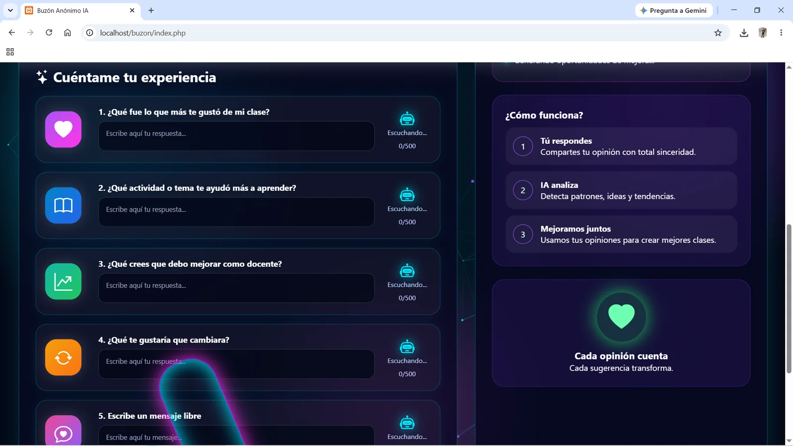
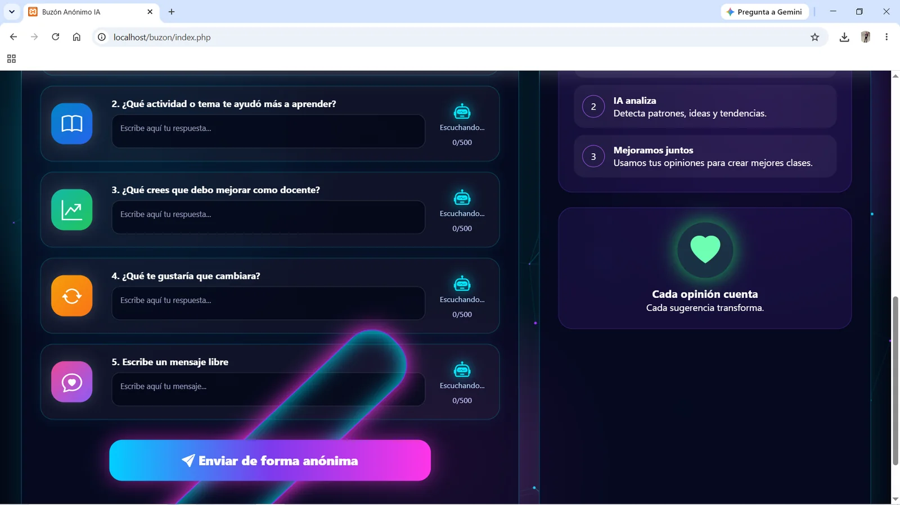
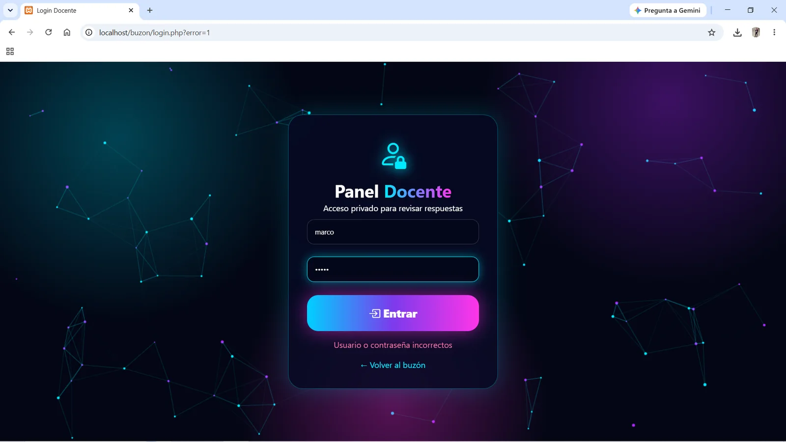
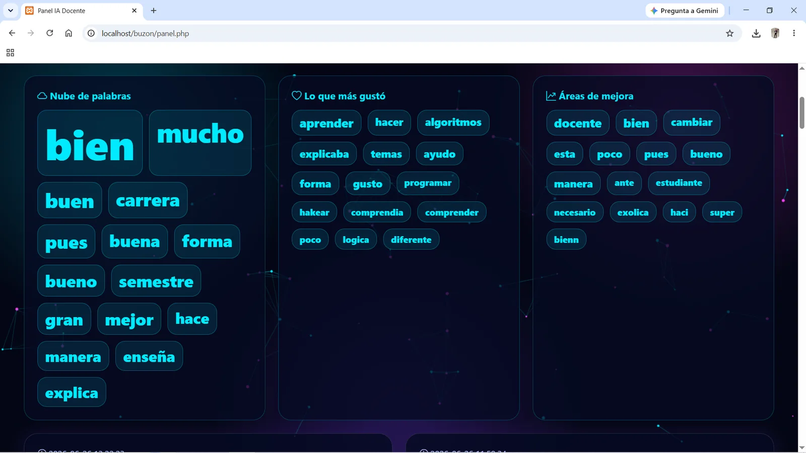
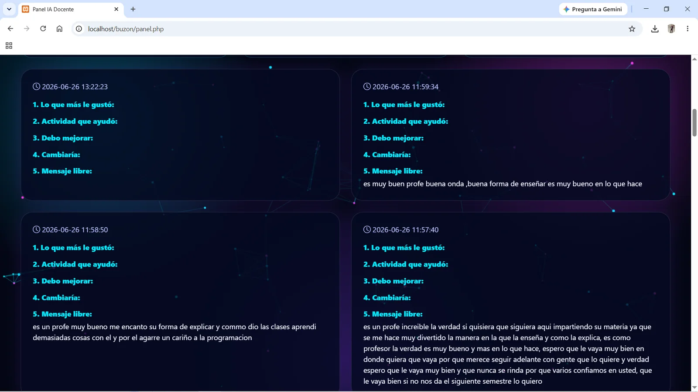
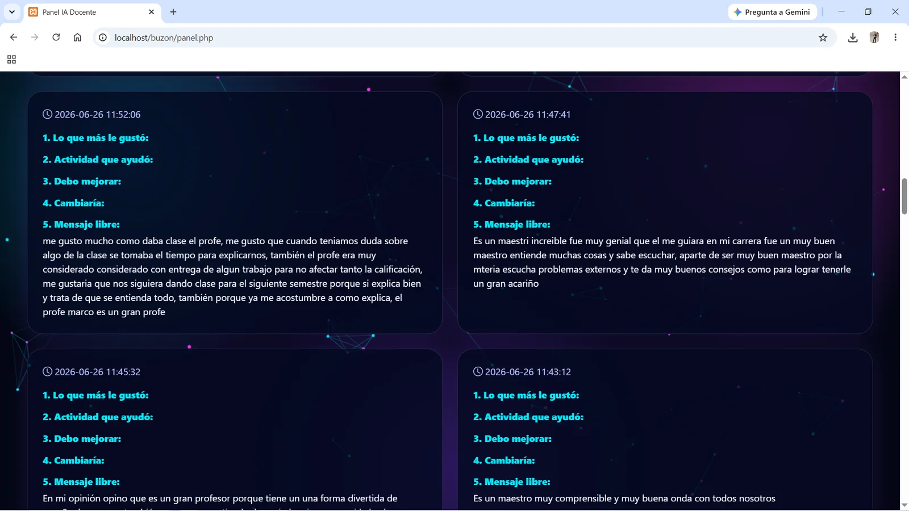

Problema
Los estudiantes necesitaban un medio confidencial para expresar qué aspectos de las clases funcionaban y cuáles podían mejorarse.
Plataforma web para recopilar opiniones anónimas de estudiantes, analizar patrones y consultar resultados desde un panel docente privado.

Los estudiantes necesitaban un medio confidencial para expresar qué aspectos de las clases funcionaban y cuáles podían mejorarse.
Se desarrolló un formulario anónimo conectado a una base de datos y un panel privado para revisar las respuestas.
El sistema permite a los estudiantes compartir su experiencia sin registrar su identidad y brinda al docente un panel privado con métricas, palabras frecuentes, áreas de mejora y respuestas completas.

Portada del buzónPresentación del sistema, privacidad y propósito educativo.
Formulario guiadoPreguntas estructuradas para obtener información útil del semestre.
Envío anónimoRegistro sin nombre con una interfaz clara y amigable.
Acceso privadoInicio de sesión para proteger la información recopilada. Panel docenteMétricas, resumen generado y estado general de la retroalimentación.
Análisis de tendenciasNube de palabras, temas valorados y posibles áreas de mejora.
Respuestas completasConsulta cronológica de las opiniones recibidas.
Evidencia de uso realComentarios anónimos obtenidos durante el cierre de semestre.